“Everest Admin Theme” Documentation by “AccessPressThemes” v1.0
“Everest Admin Theme”
Thank you for purchasing our plugin. If you have any questions that are beyond the scope of this help file, please feel free to email via our user page contact form here. Thank you so much!
Table of Contents
How to use
- Plugin Settings
- Menu Manager
- Import/Export
Plugin Settings - top
Here you can find the overall settings of a plugin. The Plugin settings can be divided into different sections. They are:
Template selection
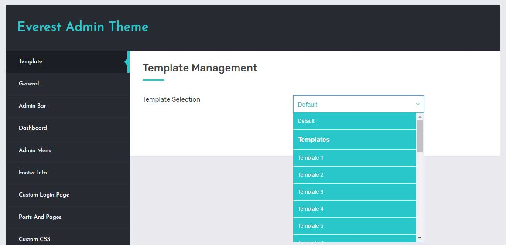
In this settings you can select the template of the admin backend from the 25 pre designed templates. If you don't wish to use any template you can simply leave the template selection option to default.
General Managemnet
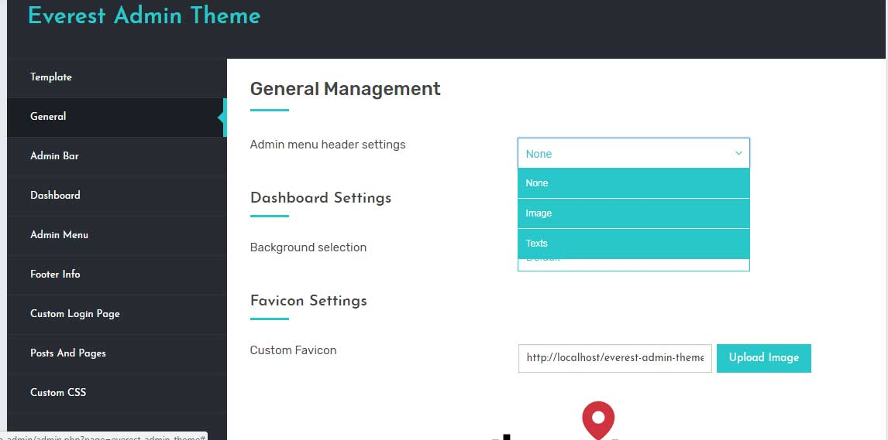
- Admin menu Header settings:
In this settings you can select an option to use header image or texts. For each selection you can get various options related to selected option.
- Image:
If you select image option you will get an option to insert the image url that you want to use. Also you will get an option to select the image from media library as well.
- Texts:
If you select texts you can configure the title and subtitle of the header. Each title and subtitle have it's font settings options. You can customize the font color and font family for each title and subtitle.
For both settings you can choose the background color of the header.
- Dashboard Settings:
In this tab you can also choose the wordpress dashboard background. Dashboard background that you can use are default, Background image, Background color or Background video.
- Default: Please choose this option if you don't want to use any background and use the default.
- Background color: Please select this option if you want to use the background color as per your need. Here you will get an option to choose the background color selection option.
- background image: If you select this option you will get an option to insert the url of the image or you can use the wordpress media library. Also here you will get an option to enable the parallax effect and enable/select the overlay color.
- background video: If you select this option you will get an option to use the different video source as background video, you can use youtube, viemo or mp4 videos as background image. Similar to the background image you can also enable the parallax effect and enable/disable the overlay color of the video.
- Favicon settings: Here you can select the favicon of the admin dashboard.
Admin Bar
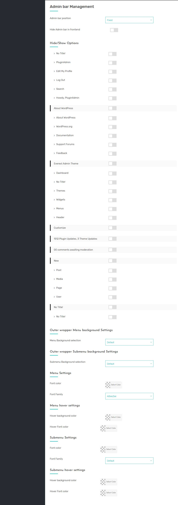
- Admin bar position
>> Here you can configure the position of admin bar be absolute or fixed.
- Hide/Show options
>> In this option you will get options to enable or disable the admin bar menu and submenu items.
- Outer wrap menu background settings
>> In this settings you will get options for the outer menu background option. You can use background color or background image.
If you select background image you will get an option to enter the image url or you can choose the image from the media library.
If you select background color you will get an option to select the background color.
- Outer wrap submenu background settings
>> In this settings you will get options for the outer submenu background option. You can use background color or background image.
If you select background image you will get an option to enter the image url or you can choose the image from the media library.
If you select background color you will get an option to select the background color.
- Menu settings
>> In this settings you can configure the font color, font family and background color/image of each menu item.
- Menu hover settings
>> In this settings you can configure the hover font color and hover background color of each menu item.
- Submenu settings
>> In this settings you can configure the font color, font family and background color/image of each menu item.
- Submenu hover settings
>> In this settings you can configure the hover font color and hover background color of each menu item.
Dashboard
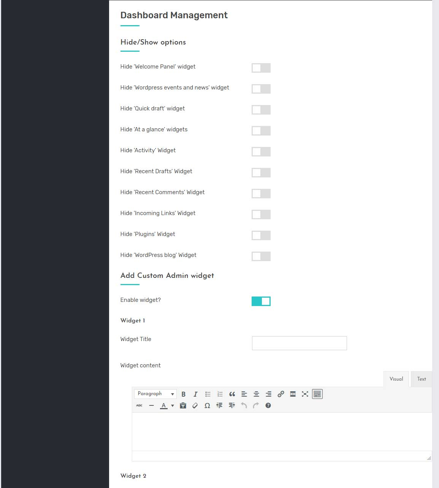
- Hide/show options >> Here you will get options to hide the default widgets of the dashboard section.
- Custom Widgets >> Also you will get option to add custom admin widgets as per your need. You can add upto 5 custom widgets.
Admin Menu
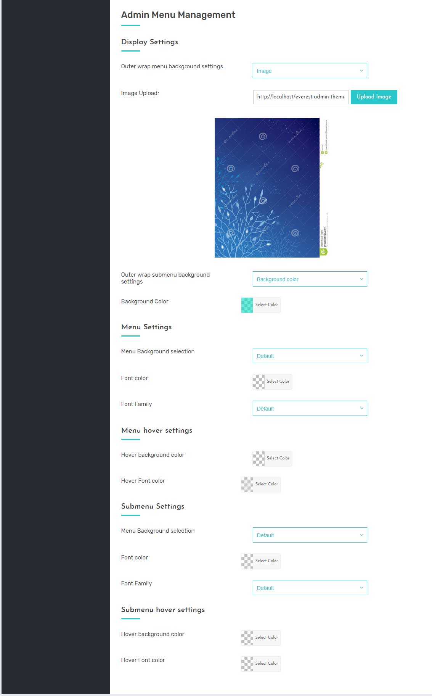
- Enable admin menu manager >> Please enable this option if you want to use menu manager section. Enabling this option will take the custom menu order settings from the menu manager settings.
- outer wrap menu background settings >> In this settings you will get options for the outer menu background option. You can use background color or background image.
If you select background image you will get an option to enter the image url or you can choose the image from the media library.
If you select background color you will get an option to select the background color.
- Outer wrap submenu background settings
>> In this settings you will get options for the outer submenu background option. You can use background color or background image.
If you select background image you will get an option to enter the image url or you can choose the image from the media library.
If you select background color you will get an option to select the background color.
- Menu settings
>> In this settings you can configure the font color, font family and background color/image of each menu item.
- Menu hover settings
>> In this settings you can configure the hover font color and hover background color of each menu item.
- Submenu settings
>> In this settings you can configure the font color, font family and background color/image of each menu item.
- Submenu hover settings
>> In this settings you can configure the hover font color and hover background color of each menu item.
Footer Info
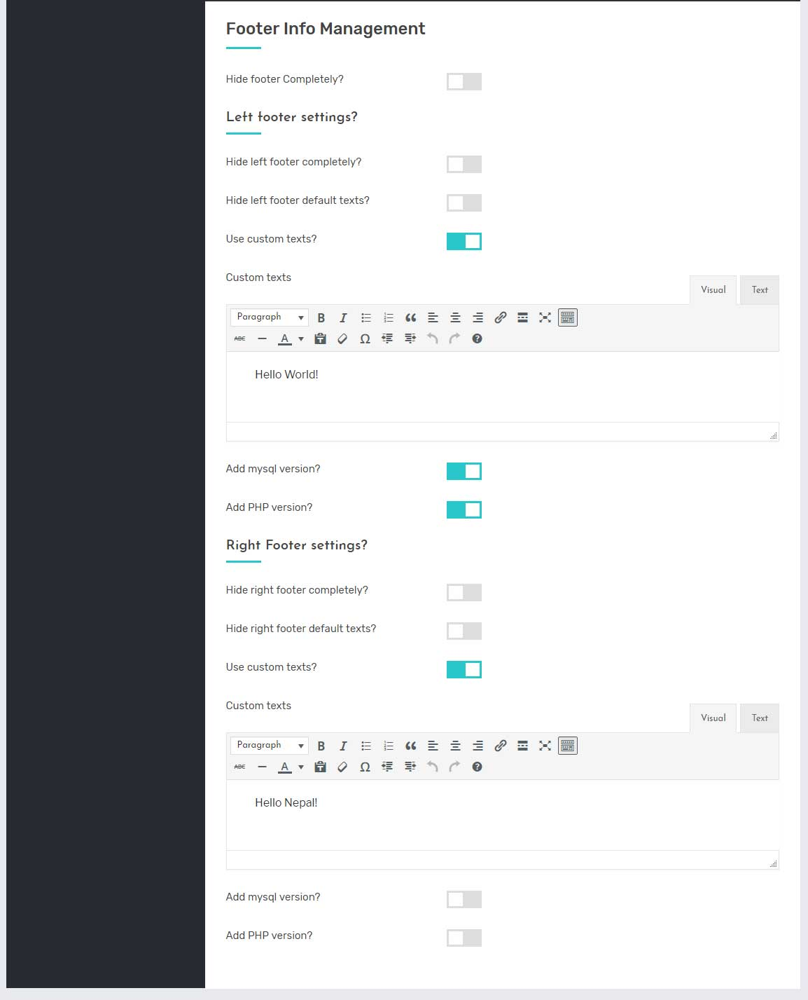
- Hide footer completely >> Option to hide the footer info completely from wordpress backend.
- Left Footer settings >> Here you will get options to hide the left footer completely or you can add custom texts and also there are options to show mysql version and PHP version as well.
- Right Footer settings >> Here you will get options to hide the right footer completely or you can add custom texts and also there are options to show mysql version and PHP version as well.
Custom Login page
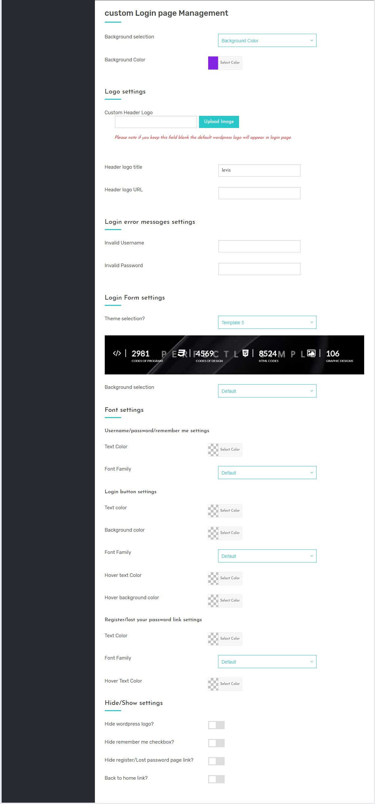
- Background selection >> Here you will get various options to use as background for login page - default, Image, video, background color.
- Default: If you don't need to use any background and use default one then please select this option.
- Background Image: You can use images as background. Please enter the url of the image that you want to use as background.
- Background Color: You can use custom color as background. Here you will get color picker to choose the background color.
- Background Video: Here you will get various sources options to be used for the background of the login page. You can use Youtube videos, viemo videos or mp4 videos as background video.
- Logo settings >> In this settings you can upload your own logo image. Use your custom Header logo title and it's custom logo url.
- Login error message settings >> Here you can configure the custom login error messages for username and password.
- Login form settings >> You can use the custom templates from 5 per designed custom templates. Also you can use custom background image or color for the login form.
- Font settings >> Here you can set the font family and font color for username/password/remember me text labels and register, lost your password link settings. Also you can use the custom text settings for login button.
- Hide/show options >> You can use this option if you don't want to show some components in the login page. For example you can disable the display of wordpress logo, remember me checkbox, register/lost password link, back to home button.
Posts and Pages
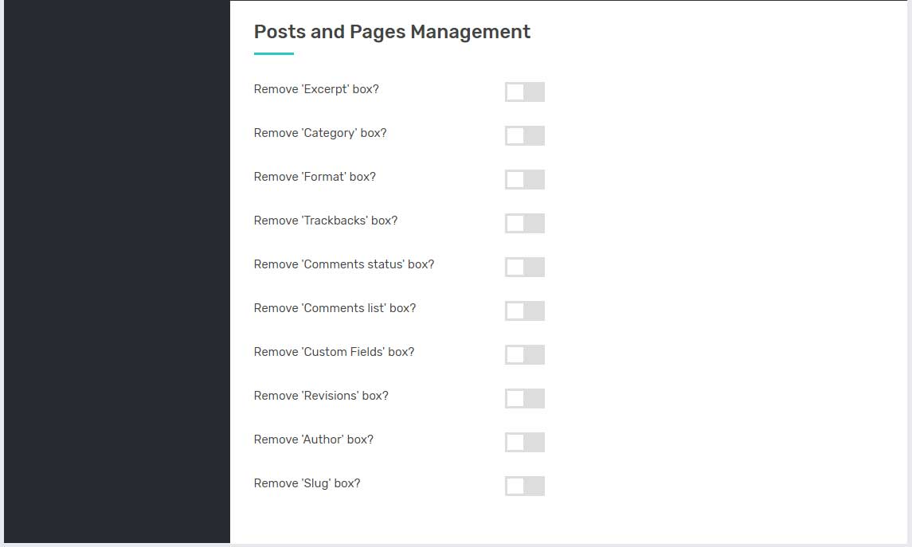
Here you will get different hide/show options related to posts and pages.
Custom CSS
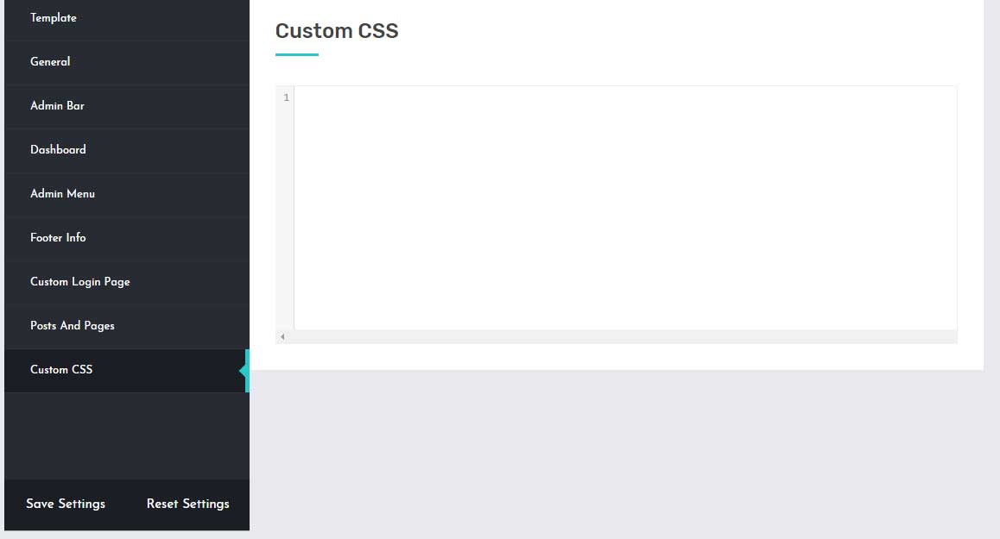
Here you can write your own custom css for the plugin if needed.
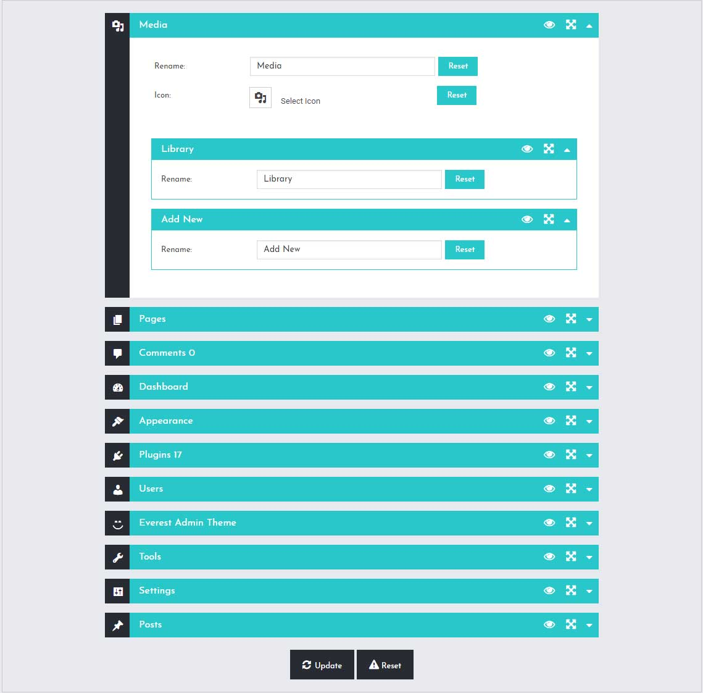
In this section you will get the options for the admin menu manage option like sorting and renaming.
For menu you can rename, sort and select different dashicons icons from available Dashicons selection option.
For submenu you can rename and sort the submenus.
Import & export settings - Top
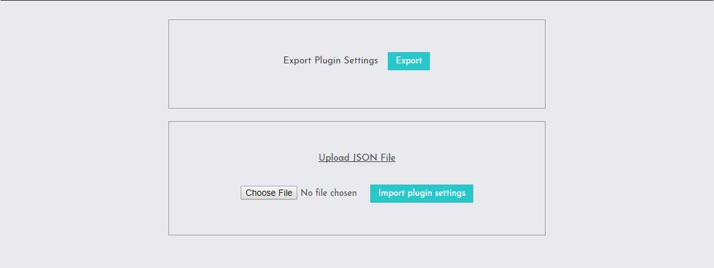
In this section you can do the import and export of the current plugin settings that you have saved so that it will be easier for importing the plugin settings.
- Import: In this section you can do the import of the plugin settings in the json format.
- Export: In this section you can do the export of the selected pricing table in the json format.
Once again, thank you so much for purchasing our plugin. As We said at the beginning, We would be glad to help you if you have any questions relating to this plugin. No guarantees, but We'll do our best to assist. If you have a more general question relating to the plugin on Codecanyon, you might consider visiting the forums and asking your question in the "Item Discussion" section.
AccesspressThemes
Go To Table of Contents